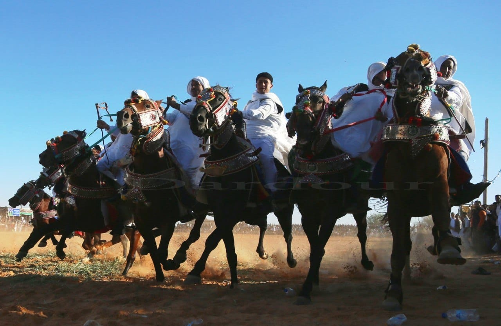
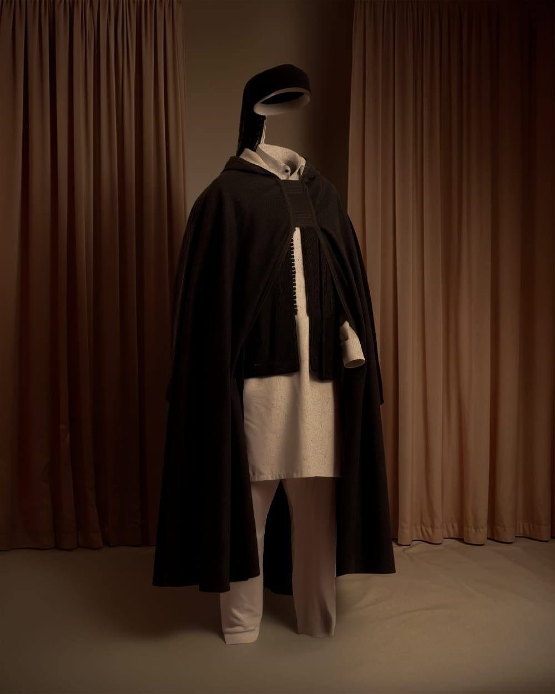

مسار الحضارات
طرابلس → لبدة الكبرى → صبراتة → شحات.

من المشي في المدن القديمة إلى التخييم في الصحراء، ومن مراقبة الطيور إلى تذوق المطبخ المحلي، تقدم ليبيا تجارب متنوعة لا تُنسى.
تتيح الصحراء الليبية فرص الاستكشاف عبر الكثبان والبحيرات والواحات والجبال والوديان، مع تجارب السفاري والتخييم وركوب الجمال والتصوير ومشاهدة النجوم.

رحلات السفاري تمنح الزائر طريقة منظمة لاكتشاف الكثبان والوديان والواحات بمرافقة أدلاء محليين ومسارات آمنة.

ليالي الصحراء تحت النجوم تجربة هادئة تجمع الشاي والنار والسماء الصافية وذاكرة القوافل.

يمتد الساحل الليبي بفرص واعدة للاصطياف والغوص والأنشطة البحرية، ومن أبرز المناطق خليج بمبة وشواطئ الجبل الأخضر والساحل الغربي.

تضم ليبيا نوادي بحرية ورياضية يمكن تطويرها كجزء من التجارب السياحية المنظمة.

الفروسية جزء من الذاكرة الشعبية والاحتفالات، وتقدم تجربة ثقافية وبصرية قوية للزائر.

تجارب المشي والطبيعة والوديان والشواطئ والقرى الجبلية تمنح الجبل الأخضر طابعًا مختلفًا داخل ليبيا.

تتنوع الفعاليات بين الراليات الصحراوية والماراثونات ومسابقات الفروسية والرياضات البحرية والجوية، إلى جانب المهرجانات الثقافية في هون وغات وسوكنة وأوجلة وجرمة وتساوة.

تقدم الصحراء والبحيرات والهدوء الطبيعي فرصًا لتجارب استرخاء واستشفاء مستقبلية ضمن مسارات منظمة.

طرابلس → لبدة الكبرى → صبراتة → شحات.
بنغازي → البيضاء → شحات → سوسة → رأس الهلال.
سبها → أوباري → غات → أكاكوس.
أوجلة → هون → سوكنة → ودان → أوباري → غدامس.
غريان → يفرن → جادو → نالوت → قصر الحاج.